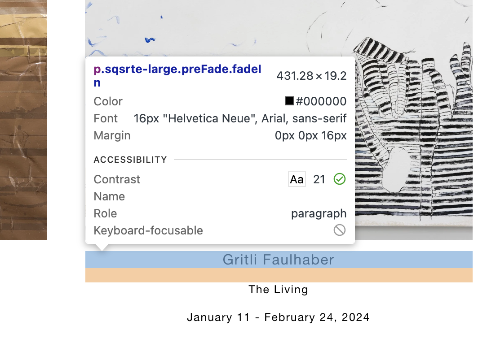

Fonts Used
This site uses one consistent font throughout with only changes in size,
weight, and color. It looks like there is a styles.css sheet
that contains this info for formatting.

This site uses one consistent font throughout with only changes in size,
weight, and color. It looks like there is a styles.css sheet
that contains this info for formatting.